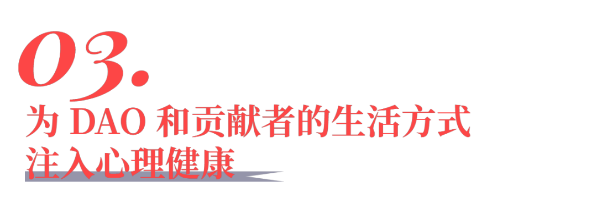
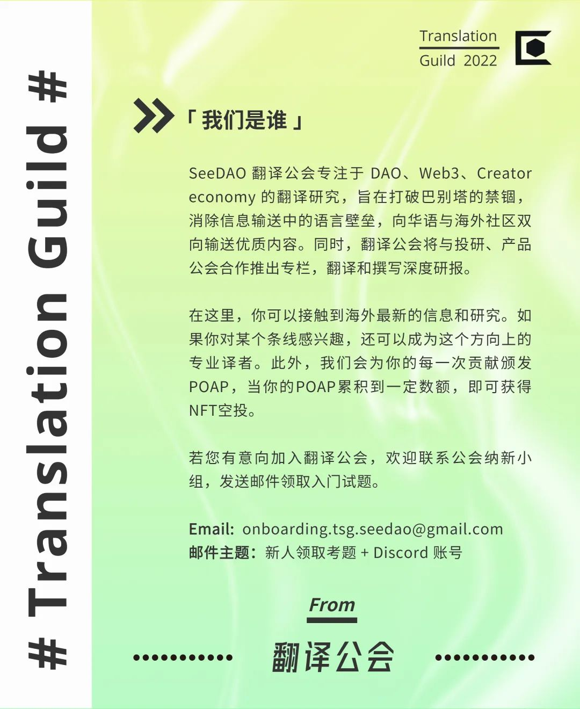

积极健康的心理状态对我们的生活和职业发展必不可少。它是我们实现远大目标，维系人际关系，对社区做出有意义贡献的前提。
然而今天，DAO 组织中的心理健康问题正在备受侵扰，DAO 和贡献者的生活方式所面临的诸多挑战折损了工作的美好未来。
「DAO 的潜能」，作者：Twoplus
于是我们发起了 Twoplus：DAO 贡献者的心理健康俱乐部。我们的使命是，通过将心理健康置于协作的首位，为数字社区的繁荣发展赋能，并进而创造积极影响。
「心理健康是一种可调节的能力，它能够利用资源和技能来灵活应对各种优劣状况，从而让人茁壮成长（实现最佳功能）」
我们认为，心理健康能让我们觉知自我，持续解放出自身的全部潜力。作为一个社区，利用 DAO 依然处在早期发展阶段的优势，我们正在使心理健康成为 DAO 领域的默认文化。
本文将围绕上述思想谈一谈 DAO 和 Web3 领域中的心理健康问题。
心理健康简介
DAO 组织中心理损耗的代价
为 DAO 和贡献者的生活方式注入心理健康
心理健康改变了我们对心理卫生的观念，把它从被动忍受的东西，转变成为我们能够有目的地去培养的东西。就如同体能一样，进行心理健康练习意味着对我们的大脑进行训练，让它拥有更好的精神力量、韧性以及灵活度。
心理健康关系到每一个人，对于 DAO 的贡献者来说更是如此。我们不停地处理信息，转换语境，即使已经「离线」也会被各种事务侵扰。对「垃圾信息」的大量消费让我们「心理过载」，以至于不停渴望更多的多巴胺，不停地寻找更多的刺激。
以往，工作或许会让人的身体疲惫万分，但是 DAO 绝大部分消耗的是我们的大脑。这种新的工作模式需要付出巨大的代价，因为随着时间的推移，我们的大脑将会受损，健康状态也会大不如前。
由此得到的一个结论是，DAO 和 Web3 中的工作需要某种程度的身心健康。心理健康训练能够帮助我们适应新的领域，将 DAO 生活的挑战转变为成长的机会。
提高自我认知，以便更好地处理数字化的人际关系和含混的人际互动，进而启迪并提升情商──心智「灵活性」
了解如何关闭我们的神经系统，学会积极应对一天中的高强度工作和事件，并最终防止陷入倦怠状态──心理「韧性」
专注于当下，重获注意力的主动权，努力让工作内容与自身优势和价值观长期保持一致──心智「力量」
通过提升情商和自我认知，自发地运用心理健康技能，我们可以更从容地处理现状，无论是遭遇市场崩溃这样的事件，还是处理和其他贡献者之间的紧张关系。我们会变得更加客观，变成一个更擅长解决问题的人。此外，我们还能够以一种可持续的方式，管理好自己的能量，免受倦怠或冲突之类问题的伤害。
在 Web3 的世界中，我发现自己的大脑总是在攫取多巴胺
从 Twitter 到 Discord 切个不停
心理健康不仅仅是指停下来歇会儿，或出去户外转一圈（尽管这些挺有帮助！）
我认为心理健康是指识到这个机制，允许冲动的存在，却能对它视如不见
让我们简短地用一个历史类比来强调在 DAO 领域中对心理健康采取专门措施的重要性：
二十世纪五十年代，美国人转向了过度富足且久坐的市郊生活。这一突然转变导致了很多健康问题，遍及全美各州并且还在不断增长。
如今，轮到 DAO 的贡献者担当全新生活方式的先驱了。这回，贡献者们身处其中的数字化和 DAO 生活也是具有危险的外部性的。
我们每天一睁眼就粘在 Discord 和 Twitter 上──这些相互竞争的平台，没有哪个不是为了攫取你的注意力设计的。
我们让自己被大量「垃圾」信息填满。
我们持续不断地在切换语境──抽干了大脑的处理容量。
我们受制于市场条件和项目的瞬息万变所带来的高度不确定性。
我们用社交媒体上的关注者和点赞数来衡量自身价值，总是觉得自己做的不够，或者担心错失一些似乎「一生一次」的好机会。
因此，在 DAO 中工作虽然有很大的自由度和回报，但也意味着要注意我们所处的工作环境、常规和重新思考我们的精神健康。
美国人的体型发生变化时，他们可以直接看到。但是对于在 Web3 中工作的人来说，对我们大脑（以及整体健康和安乐）的损害是隐藏的，只会以慢性压力和倦怠的方式显现，那就为时已晚了。
随着时间推移，精神损耗的打击会越来越大。
短期：协作时缺乏活力，日常工作中产生不适感
中期: 疲惫，矛盾和冲突影响生产力和创造性
长期: 声誉受损，失去吸引人才的能力及竞争优势

我们认为主要有两种将心理健康理念和实践注入 DAO 的途径：
贡献者的体验──组织层面
贡献者的训练──个人层面
首先， 将心理健康作为核心原则的组织，将能通过以人为本的组织设计来减轻心理损耗。这样的组织将努力提供更好的贡献者体验，对 DAO 在全球人才竞争中保有一席之地至关重要。
对贡献者而言 DAO 相当于产品 ，UX 规则可以在许多方面加以运用。贡献者体验的迭代，始于和勤勉工作的人保持密切关系，了解他们的困境，并且将提供解决方案作为优先要务。这里有一些起步时可以采用的原则。
其次，在今天看来，将心理健康训练作为下一步的贡献者培训内容是最高效的方式。无论一个人想成为世界级的 DAO 建设者，还是只是随意参与一下，进行心理健康训练都是潜入内心、更深入地了解自我的机会。我们认为，它对（DAO 组织中常见的）自我管理和自我导向的工作风格来说是重要的基础，。
幸运的是，DAO 所提供的自由度和灵活性，为在一天中注入心理健康训练创造了空间：比如在早晨，午饭后或者在会议间隙，都可以进行一些练习。
不管是冥想，呼吸练习，NSDR（无睡眠深入休息法），进入心流状态或者写日记，采用一种练习都有很多好处，例如，梳理好一整天的事务，长期拓展心智能力，为当下提供额外的心智资源。最重要的是，从小事情开始，选择一种适合你的练习并养成习惯。
全职 DAO 友们：你的日常流程是什么样子的？你在日常规划中加入了哪些个人仪式？你如何避免每天都完全不一样的混乱？
如果听下来你也想这么做，今年夏天，我们的心理健康课程将开设一个阿尔法小组，点击注册吧!
https://jv2bphd1l4e.typeform.com/to/J24VtRtW
本文由 Louis, Ale, Antoine and Greg撰写。
THE END
